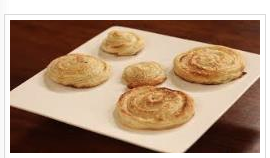

Kashmiri Bakarkhani

Recipe by Mah Rukh
Ingrediants:
- Plain Flour ½ kg
- Butter 250 gms
- Eggs 2
- Sugar 1 tsp
- Butter 2 tbsp
- Water as required
- Salt to taste
- Sesame Seeds 4 tbsp
Instructions:
- In s bowl, add plain flour, one egg, salt, sugar, 2 tsp butter and water and knead dough. Leave it for 20
minutes.
- Now, roll the dough like roti.
- Then add butter in mid, folds in 4 sides.
- Roll again and repeat this process 5 to 6 times.
- Divide the dough in 8 equal parts. Roll the each past like a rope then give shape of robe and roll in swirl.
- Brush it with beaten egg, sprinkle sesame seeds. Bake it in the oven at 200 degree centigrade for 12-15
minutes. Kashmiri bakarkhani is ready.